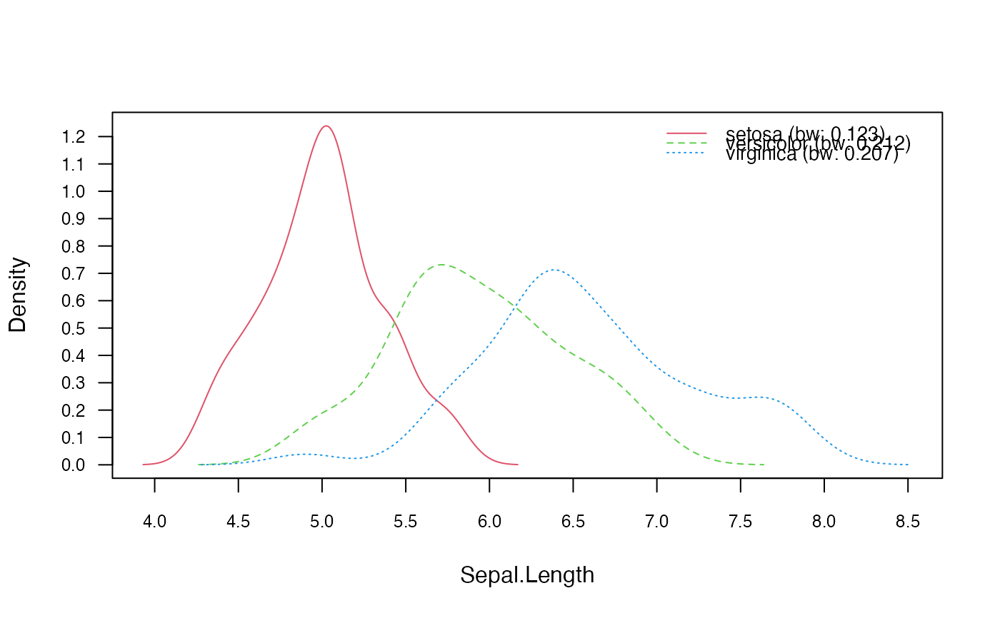
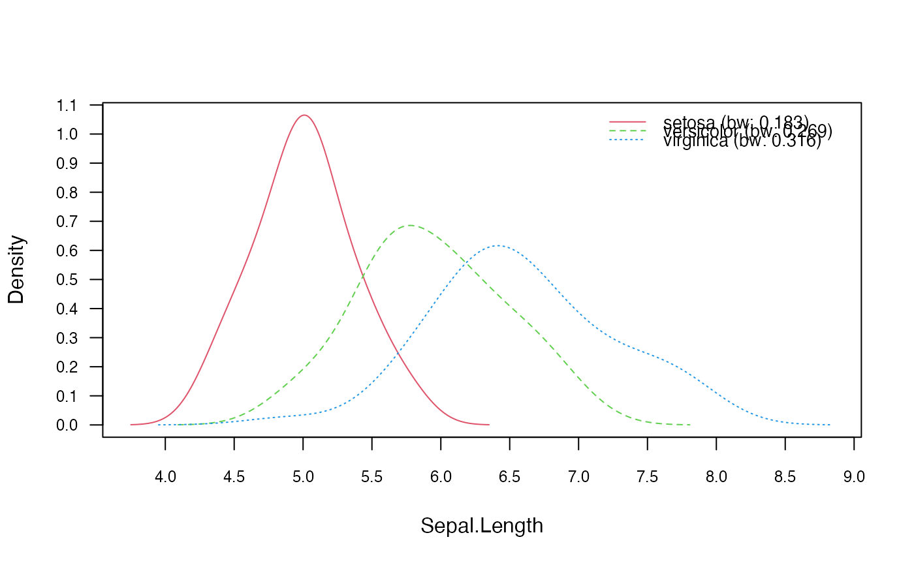
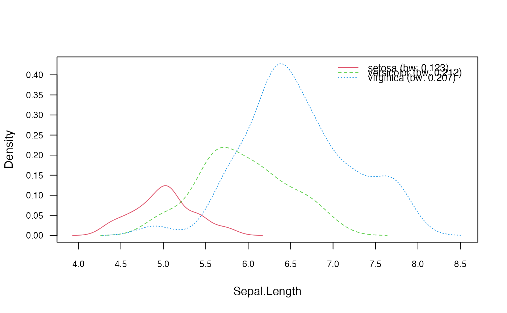
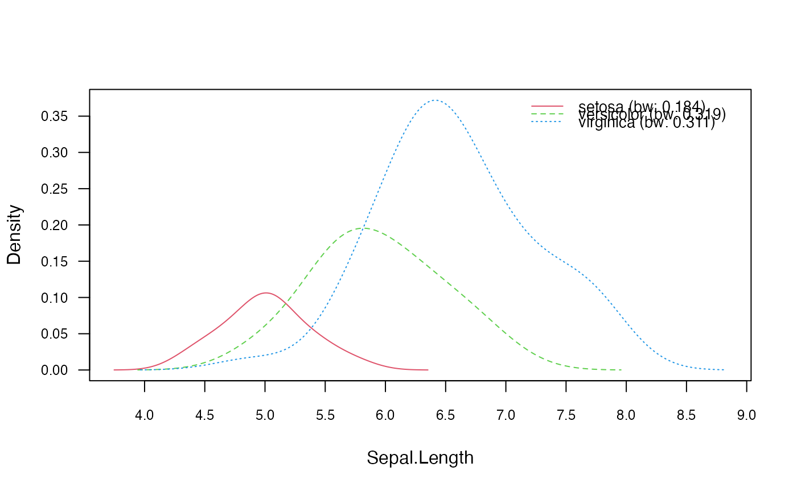
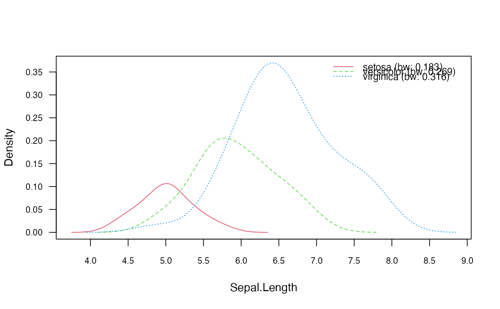
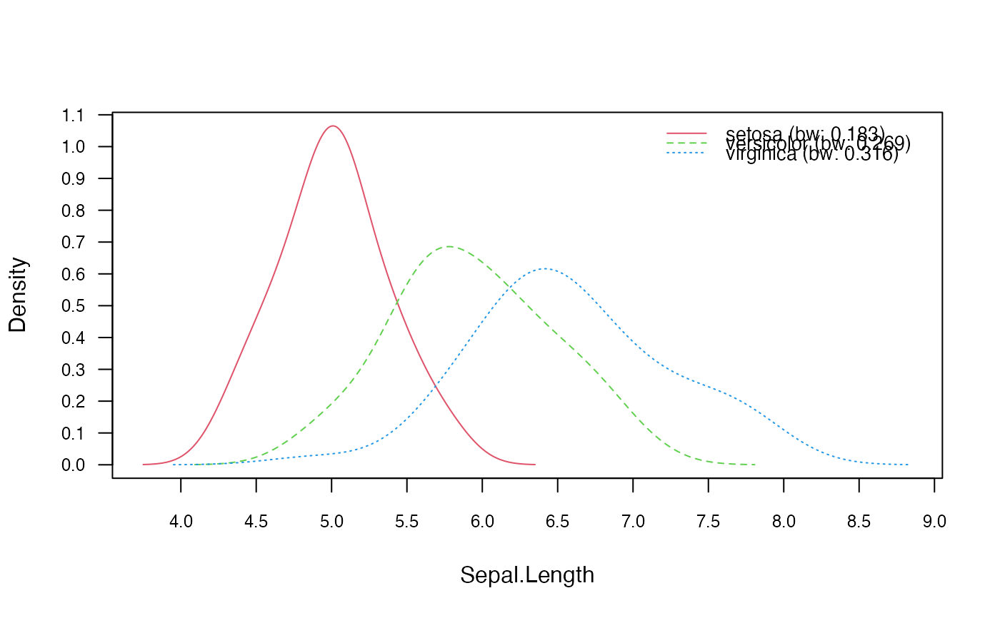
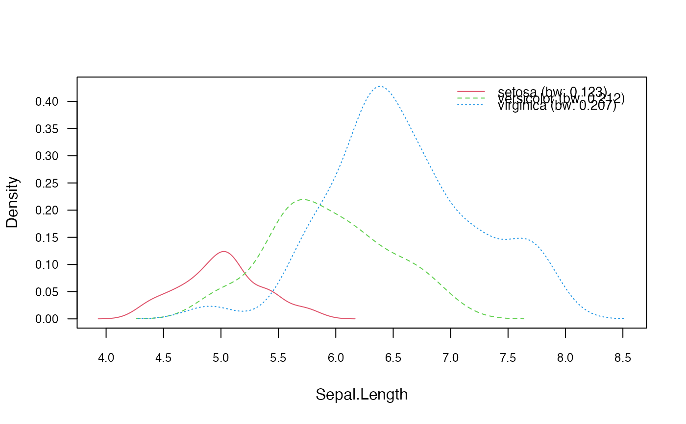
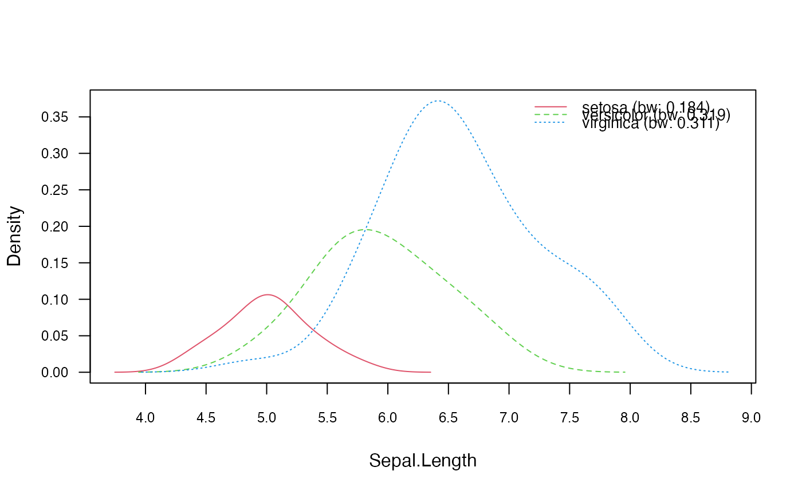
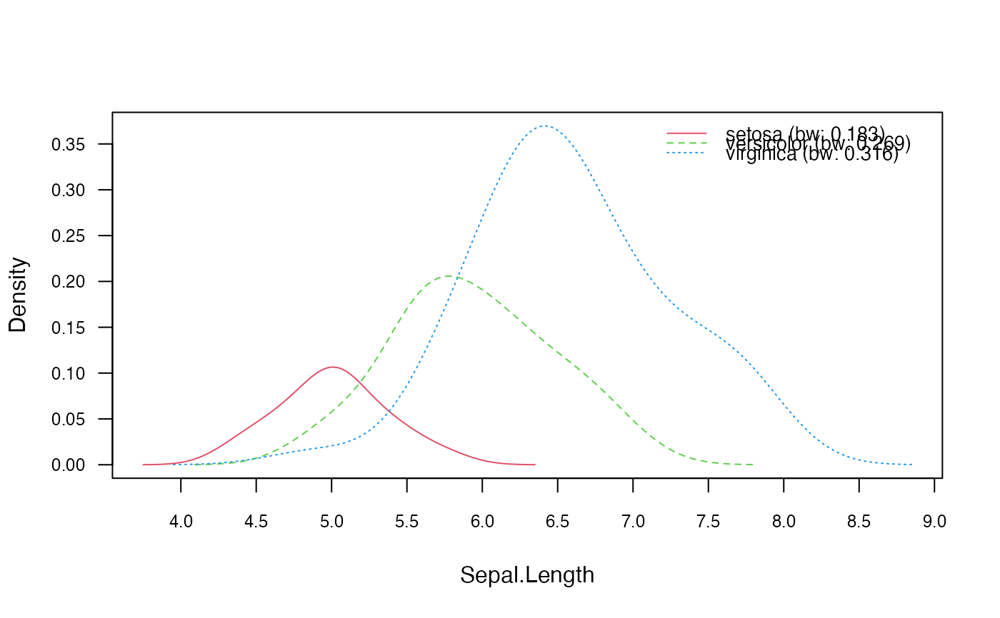

Plot Method for nonparametric_naive_bayes Objects
plot.nonparametric_naive_bayes.RdPlot method for objects of class "nonparametric_naive_bayes" designed for a quick look at the estimated class marginal or class conditional densities of metric predictors.
Arguments
- x
object of class inheriting from
"nonparametric_naive_bayes".- which
variables to be plotted (all by default). This can be any valid indexing vector or vector containing names of variables.
- ask
logical; if
TRUE, the user is asked before each plot, seepar(ask=.).- legend
logical; if
TRUEalegendwill be be plotted.- legend.box
logical; if
TRUEa box will be drawn around the legend.- arg.num
other parameters to be passed as a named list to
matplot.- prob
character; if "marginal" then marginal distributions of predictor variables for each class are visualised and if "conditional" then the class conditional distributions of predictor variables are depicted. By default, prob="marginal".
- ...
not used.
Details
Estimated class marginal or class conditional densities are visualised by matplot.
The parameter prob controls the kind of probabilities to be visualized for each individual predictor \(Xi\). It can take on two values:
"marginal": \(P(Xi|class) * P(class)\)
"conditional": \(P(Xi|class)\)
Author
Michal Majka, michalmajka@hotmail.com
Examples
data(iris)
y <- iris[[5]]
M <- as.matrix(iris[-5])
### Train the Non-Parametric Naive Bayes with custom prior
prior <- c(0.1,0.3,0.6)
nnb <- nonparametric_naive_bayes(x = M, y = y, prior = prior)
nnb2 <- nonparametric_naive_bayes(x = M, y = y, prior = prior, adjust = 1.5)
nnb3 <- nonparametric_naive_bayes(x = M, y = y, prior = prior, bw = "ucv")
#> Warning: minimum occurred at one end of the range
#> Warning: minimum occurred at one end of the range
#> Warning: minimum occurred at one end of the range
#> Warning: minimum occurred at one end of the range
#> Warning: minimum occurred at one end of the range
#> Warning: minimum occurred at one end of the range
#> Warning: minimum occurred at one end of the range
#> Warning: minimum occurred at one end of the range
#> Warning: minimum occurred at one end of the range
#> Warning: minimum occurred at one end of the range
# Visualize estimated class conditional densities corresponding
# to the first feature
plot(nnb, which = 1, prob = "conditional")

plot(nnb2, which = 1, prob = "cond")
 plot(nnb3, which = 1, prob = "c")

# Visualize estimated class marginal densities corresponding
# to the first feature
plot(nnb, which = 1)

plot(nnb2, which = 1)

plot(nnb3, which = 1)

plot(nnb3, which = 1, prob = "c")

# Visualize estimated class marginal densities corresponding
# to the first feature
plot(nnb, which = 1)

plot(nnb2, which = 1)

plot(nnb3, which = 1)
